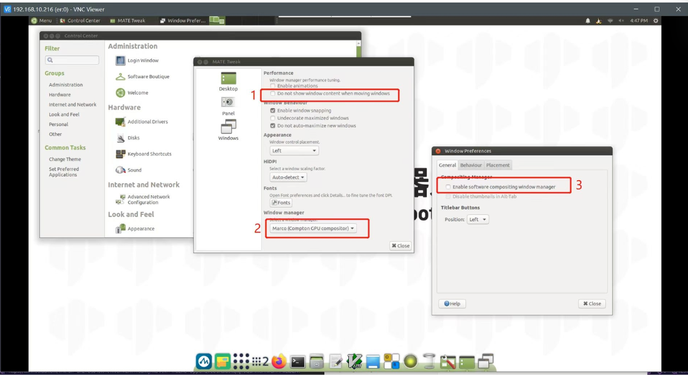

Other Issue
Q1: Where is the download path for the urdf file?
- A1: Please refer to the following path. The urdf of all mycobot models is in this path: https://github.com/elephantrobotics/mycobot_ros/tree/noetic/mycobot_description/urdf
Q2: What is the base coordinate system of the mycobot pro 450 robot?

Q3: Are the joints of 450 controlled by the serial bus?
A3: Yes
Q4: Is there more explanation about the understanding of coordinates?
A4: The API for controlling coordinate movement is send_coords([x,y,z,rx,ry,rz], speed) x, y, z coordinates: Control the position of the end effector of the robot in space. Changing these coordinate values will move the robot to different spatial positions, thereby achieving positioning in three-dimensional space. rx, ry, rz attitude angles: Control the attitude or orientation of the end effector of the robot. These values are usually given in the form of Euler angles, describing the rotation of the end effector of the robot relative to the base coordinate system, and the order of Euler angles is zyx. Changing these values will rotate the end effector of the robot to different angles or directions. For example: When you adjust +X, this means that the position of the end effector of the current robot arm moves a certain distance along the positive direction of the X axis of the current end effector. This action will cause the robot to move in a certain direction as a whole. And when you adjust RX, this means that the attitude of the end effector of the current robot arm rotates a certain angle around the X axis of the current end effector. This action will cause the robot to rotate as a whole and the direction of the end effector will change. In general, the adjustment of +X and RX will directly affect the motion state of the robot arm. +X controls the movement of the position, while RX controls the change of attitude. If you want to see the changes more intuitively, we recommend that you use myblockly's serial control tool to adjust a parameter at a time and observe its changes in the coordinate system. Please note that when observing rx, ry, and rz, if you want to be more intuitive, please pay attention to adjusting x and ry when the J1 joint is 0, and adjusting y and rx when the joint is 90. You can refer to the coordinate system diagram below:

Q5: Is there more explanation about the Offset of the DH parameter? Is the Offset rotated around z?
A5: The DH parameter describes the geometric and kinematic relationship between adjacent links in the robot arm. In the DH parameter table, the Offset parameter indicates the effect of the previous link rotating around its z-axis on the position of the next link, that is, the offset when connecting two links. For the Offset parameter in the robot arm, it generally indicates the effect of the previous link rotating around its own z-axis on the position of the next link, rather than rotating around the z-axis of the next link. Therefore, Offset is not a rotation around z, but a displacement when connecting two links.
Q6: What is the voltage range of the 450 robot arm power supply? How much is the instantaneous current?
A6: 24V ，9.2A
Q7: If the servos of each axis are controlled and feedback is obtained, what is the shortest communication cycle?
A7: This needs to be determined according to the speed. The minimum response time is 50ms
Q8: Does the mycobot series machine have collision detection?
A8: 450 has algorithmic collision self-interference, which has been integrated into the API for setting joint angles and coordinates
Q9: How to deal with the VNC dragging jam?
A9: If the jam is caused by dragging any window in VNC, you can make some configurations according to the picture below. The options need to be consistent with the picture below. After successful setting, the problem of VNC disconnection caused by dragging the window will be solved.

Q10: When replacing the second joint of 450, I found that 4 screws were stripped. How to remove them?
A10：Regarding the replacement of joints, the 4 screws do not need to be removed. Please remove the large screw in the middle, then fix the J2 joint body back, and then use force to pull out the entire coupling. I recorded a video for you to refer to for specific operations
Q11: Is the joint torque information provided?
A11: Our machines only provide the overall information of the entire joint, and do not provide the internal torque, voltage and current of the servo and motor actuator. The overall parameters of the robot arm are disclosed, such as repeatability, power supply voltage, etc.
Q12: How do you understand the relationship between the two coordinates in the following figure?

A12: If you want to view the transformation relationship between the coordinate system named "turtle1" and the coordinate system named "turtle2", you can use this command. In layman's terms, when you run this command, it will tell you the position and direction information of an object ("turtle1") relative to another object ("turtle2"). Just like you can know the position of a city relative to another city on a map
Q13: The environment of ROS2 has been accidentally changed. Can I just delete the ROS and reinstall it myself?
A13: Regarding the issue of reinstalling ROS, we do not recommend users to reinstall it themselves, because the construction of the ROS environment is relatively complex and prone to errors. If you need to reset the ROS environment, we recommend users to re-write the system image. For specific methods, please refer to Development and Use Based on ROS2
Q14: How to transfer files from the host to the virtual machine
A14: Set up a shared folder as shown below to transfer files from the PC to the virtual machine
<img src = ../../resources/4-SupportAndService/9.Troubleshooting/9.images/other_9.png
Q15: What is the difference between API and serial port instructions to directly control joints?
A15：API provides a simplified and abstract interface to make development more efficient and easy, suitable for rapid development and integration. Serial port commands provide direct, low-level control, suitable for scenarios that require fine-tuning or development of custom functions, but are usually more complex to develop and debug. In general: Using serial port commands to directly control the robot arm is more flexible, but also more complex, requiring a deep understanding of the communication protocol; while using API control is simpler and more convenient, but may be limited by the functions and performance provided by the API.
Q16: Windows runs git commands and reports errors

A16: This is caused by not installing git. You need to install git first and then use git commands
Q17: What is the difference between MDI and JOG?
A17: MDI (Manual Data Input) is called the set value direct given operation mode. That is, after the upper controller directly sets the target position, speed, acceleration and deceleration, the axis automatically moves to the target position. MDI is also the most commonly used positioning function in practical applications. JOG moves continuously in a certain direction.
Q18: End zero position abnormality
A18: After using the adaptive gripper to grip objects for a long time, the gripper and end zero position abnormality will occur, and the gripper needs to be stationary.
Q19: What is forward kinematics and inverse kinematics?
A19: Forward kinematics refers to solving the position and posture of the robot's end effector (such as the gripper of the robot arm) in Cartesian space when the angles (or displacements) of each joint of the robot are known. It is implemented in the get_coords() API, but the specific algorithm is not public. Inverse kinematics is the opposite of forward kinematics. It refers to solving the angles (or displacements) of each joint of the robot when the position and posture of the robot's end effector in Cartesian space are known. write_coords(), send_coords()